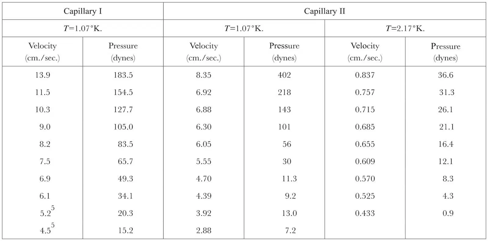
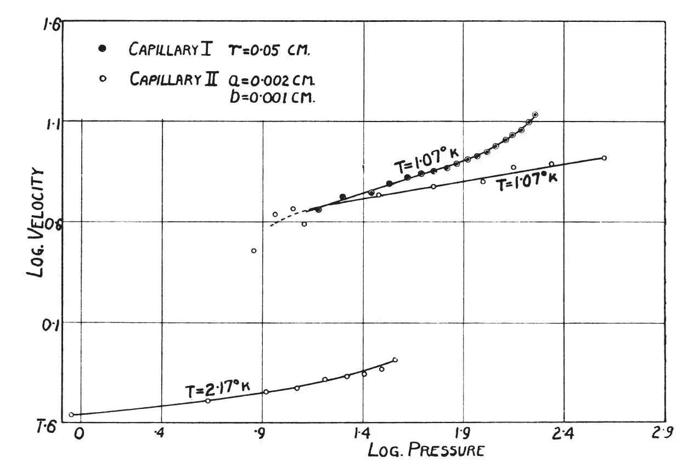

中文
中文J. F. Allen and A. D. Misener
Editor’s Note
In Cambridge, physicists John Allen and Don Misener had come to the same conclusion as Kapitza (see the previous paper). As they announce here, they had also attempted to measure the viscosity of liquid helium below the so-called “lambda point” of 2.18 K in experiments where the fluid flowed through narrow capillaries. But their results could only place an upper limit on the viscosity, comparable to Kapitza’s value. They note that the flow they observed is very strange, being independent of the pressure difference applied. It is possible, they speculate, that the liquid is actually slipping over the surface. These results would later be explained by a general theory of liquid helium as a superfluid, a state that arises from quantum-mechanical behaviour. 中文
A survey of the various properties of liquid helium II has prompted us to investigate its viscosity more carefully. One of us1 had previously deduced an upper limit of 10－5 C.G.S. units for the viscosity of helium II by measuring the damping of an oscillating cylinder. We had reached the same conclusion as Kapitza in the letter above; namely, that due to the high Reynolds number involved, the measurements probably represent non-laminar flow. 中文
The present data were obtained from observations on the flow of liquid helium II through long capillaries. Two capillaries were used; the first had a circular bore of radius 0.05 cm. and length 130 cm. and drained a reservoir of 5.0 cm. diameter; the second was a thermometer capillary 93.5 cm. long and of elliptical cross-section with semi-axes 0.001 cm. and 0.002 cm., which was attached to a reservoir of 0.1 cm. diameter. The measurements were made by raising or lowering the reservoir with attached capillary so that the level of liquid helium in the reservoir was a centimetre or so above or below that of the surrounding liquid helium bath. The rate of change of level in the reservoir was then determined from the cathetometer eye-piece scale and a stopwatch; measurements were made until the levels became coincident. The data showing velocities of flow through the capillary and the corresponding pressure difference at the ends of the capillary are given in the accompanying table and plotted on a logarithmic scale in the diagram. 中文

The following facts are evident:
(a) The velocity of flow, q, changes only slightly for large changes in pressure head, p. For the smaller capillary, the relation is approximately p∝q6, but at the lowest velocities an even higher power seems indicated. 中文
(b) The velocity of flow, for given pressure head and temperature, changes only slightly with a change of cross-section area of the order of 103. 中文
(c) The velocity of flow, for given pressure head and given cross-section, changes by about a factor of 10 with a change of temperature from 1.07°K. to 2.17°K. 中文

(d) With the larger capillary and slightly higher velocities of flow, the pressure-velocity relation is approximately p∝q3, with the power of q decreasing as the velocity is increased. 中文
If, for the purpose of calculating a possible upper limit to the viscosity, we assume the formula for laminar flow, that is, p∝q, we obtain the value η = 4×10－9 C.G.S. units. This agrees with the upper limit given by Kapitza who, using velocities of flow considerably higher than ours, has obtained the relation p∝q2 and an upper limit to the viscosity of η = 10－9 C.G.S. units. 中文
The observed type of flow, however, in which the velocity becomes almost independent of pressure, most certainly cannot be treated as laminar or even as ordinary turbulent flow. Consequently any known formula cannot, from our data, give a value of the “viscosity” which would have much meaning. It may be possible that the liquid helium II slips over the surface of the tube. In this case any flow method would be incapable of showing the “viscous drag” of the liquid. 中文
With regard to the suggestion that the high thermal conductivity of helium II might be explained by turbulence, we have calculated that the flow velocity necessary to transport all the heat input over the observed temperature gradient in the Allen, Peierls and Uddin experiments2 is about 104 cm./sec. On the other hand, the greatest flow velocity produced by manipulation and by the pressure difference along the thermal conduction capillary will not be likely to be greater than 50 cm./sec. It seems, therefore, that undamped turbulent motion cannot account for an appreciable part of the high thermal conductivity which has been observed for helium II. 中文
(141, 75; 1938)
J. F. Allen and A. D. Misener: Royal Society Mond Laboratory, Cambridge, Dec, 22.
References:
1. Burton, E.F., Nature, 135, 265 (1935).
2. Allen, Peierls and Uddin, Nature, 140, 62 (1937).